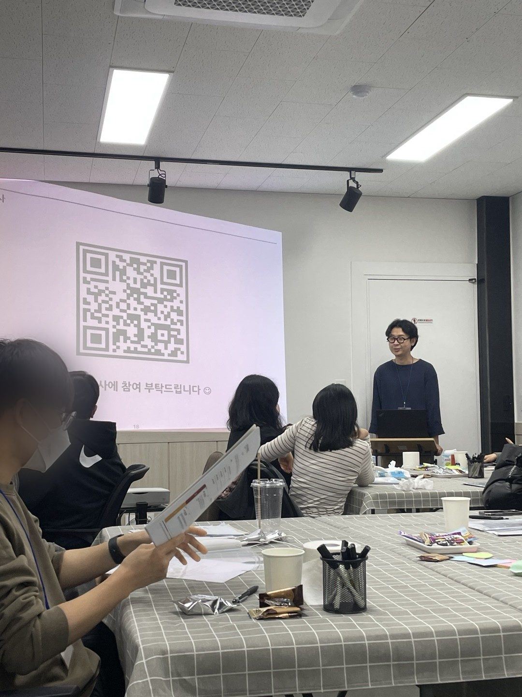
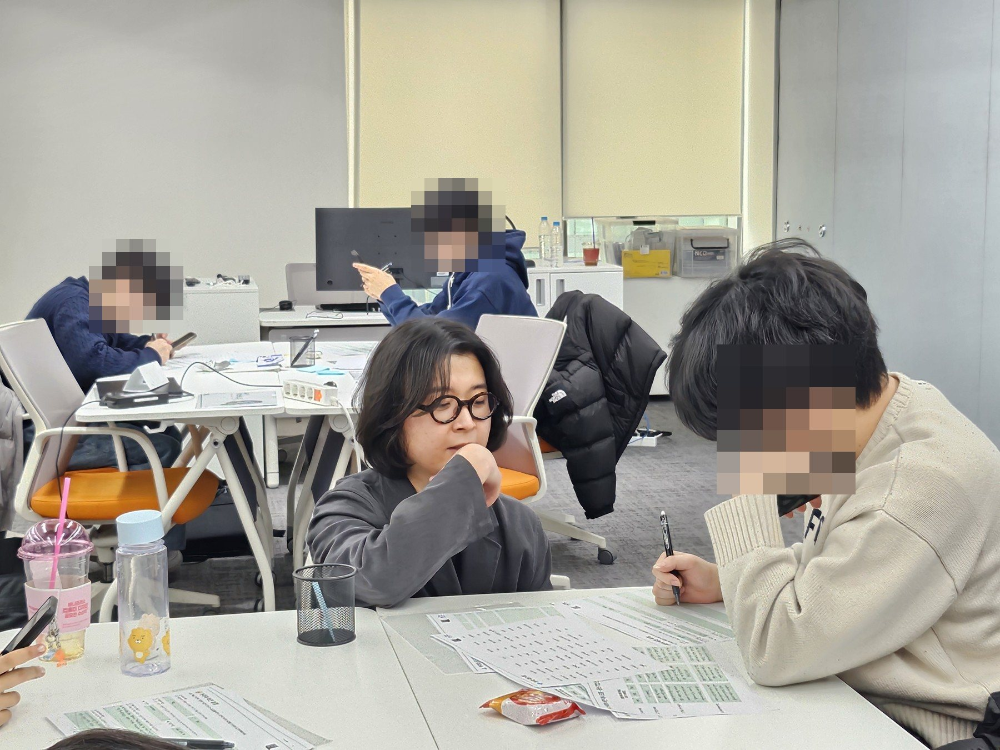
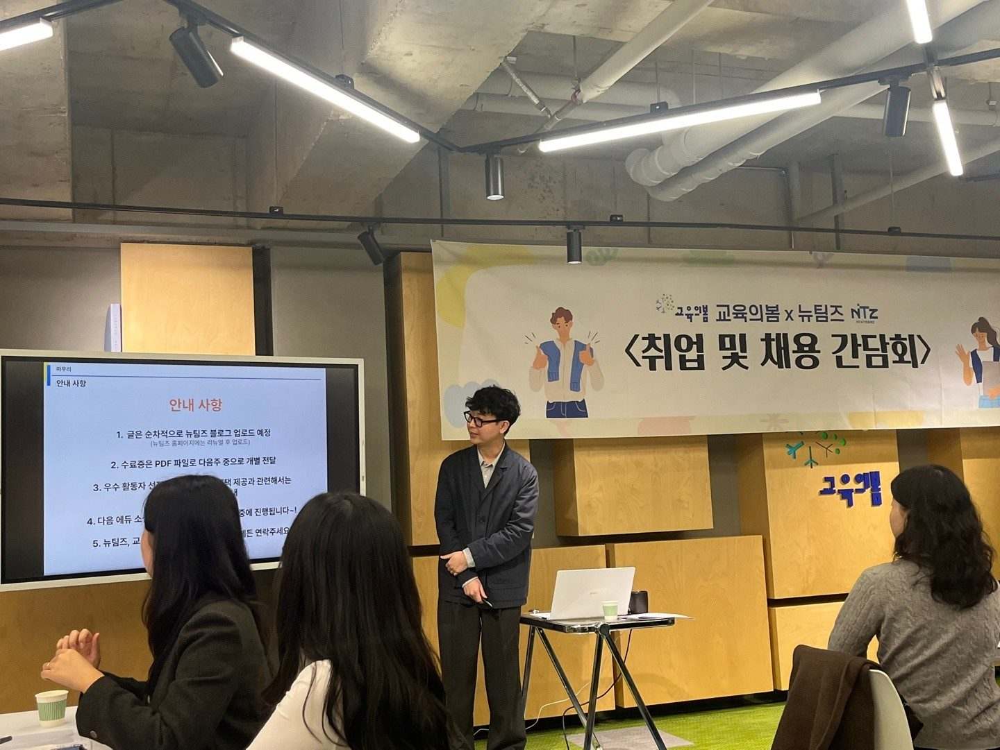
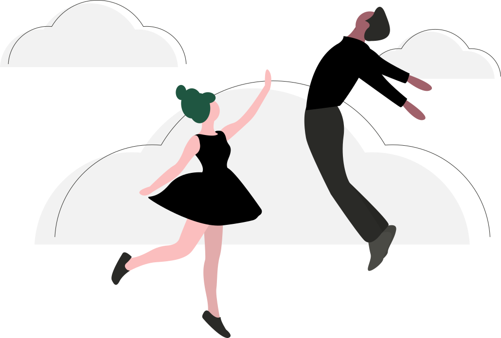

1회
지금 가장 큰 고민 하나를 정리하고 싶을 때
고민을 구조화하고 다음 한 걸음을 정합니다.
이런 고민이라면
1:1 코칭에서 가장 자주 들은 이야기입니다. 혼자 오래 붙잡고 있던 생각이라면, 말로 꺼내는 것부터 시작하셔도 됩니다.

필요한 건 더 많은 정보가 아니라, 나에게 맞는 기준입니다.

코치 소개
저는 사람들이 타고난 가능성을 최대한 펼치며 사는 것이 그 사람에게도, 세상에도 좋은 일이라고 믿습니다. 어릴 때부터 자기 분야에 헌신해 탁월한 결과를 만들고 그것을 나누는 사람들의 강연을 찾아보며 자랐고, 다른 사람이 그렇게 살도록 도울 때 제가 가장 깊이 몰입한다는 것을 알게 되었습니다.
저 역시 어떻게 살아야 할지 매일 고민했습니다. 원하는 것이 생기면 바로 선택해서 부딪혀 보는 편이었지만, 그것만으로는 확신이 생기지 않았습니다.
돌아보면 오랫동안 제 선택의 기준은 미움받지 않는 것, 그리고 흘러가는 대로 사는 것이었습니다. 사람마다, 상황마다 거기에 맞춘 제가 있었고, 진짜 제 생각은 점점 희미해졌습니다. 그 기준을 내려놓고 나서야 알았습니다. 새 기준은 밖이 아니라 안에서 찾아야 한다는 것을요.
나를 알고 나서야, 쌓아 온 경험들이 하나로 이어졌습니다.
확신은 내면을 깊이 들여다보고, 솔직한 질문을 던지고, 내가 추구하는 가치와 비전을 찾은 뒤에야 찾아왔습니다. 가치와 비전, 삶과 일, 그리고 나를 움직이는 힘이 하나로 이어지는 경험이었습니다.
2020년부터 사람의 성장과 가능성을 고민하며 교육을 만들어 왔습니다. 한 분야 최고의 전문가들이 가진 지식을 교육 콘텐츠로 만들었고, 청년들이 자신만의 커리어를 찾도록 돕는 교육 프로그램을 처음부터 끝까지 설계했습니다. 최근 3년은 청년들과 1:1로 마주 앉아 고민을 듣고 함께 길을 찾았습니다. 그렇게 정리한 내용이 자기소개서에 진정성과 힘을 더해 실제 취업으로 이어지는 경우를 많이 보았습니다.
가장 의미 있었던 순간은 언제나 1:1 대화에서 누군가 자기 길을 스스로 알아차릴 때였습니다. 그래서 이제 그 일에 온전히 집중하려 합니다. 취업이든 이직이든, 삶의 중요한 순간에 후회 없는 선택을 할 수 있도록 곁에서 돕겠습니다.
박규진 드림





참여자의 얼굴과 개인정보는 가렸습니다.
비전
많은 사람이 남에게 맞춘 여러 개의 나로 살아갑니다. 그 사이에서 진짜 내 생각은 점점 찾기 어려워지고, 선택은 무거워집니다.
저는 사람들이 그 속에서 진짜 자기 생각을 쉽게 꺼내고, 순간순간 가볍고 자유롭게 선택하며 살기를 바랍니다. 한 사람이 타고난 가능성을 펼치는 것은 그 사람에게도, 세상에도 좋은 일이라고 믿기 때문입니다.
그래서 자유에 대해 누구보다 깊이 탐구하고, 그것을 삶에서 연습할 수 있게 돕는 사람이 되려 합니다.
코칭 방법

AI는 할 수 있는 것을 늘려 주지만, 무엇을 하고 싶은지는 알려 주지 않습니다. 정보와 기술, 그럴듯한 답은 점점 쉽게 얻을 수 있게 되었고, 그럴수록 내가 무엇을 원하고 어떤 기준으로 고르는지가 더 중요해졌습니다.
About Freedom의 코칭은 본질에 기반합니다. 겉으로 드러난 고민을 서둘러 해결하지 않고, 그 아래를 깊이 들여다보며 지금까지 나를 움직여 온 진짜 기준을 찾습니다. 답을 드리기보다 질문하고, 스스로 찾을 수 있게 돕습니다. 코칭이 끝나면 더 이상 코치가 필요 없는 것, 그것이 목표입니다.
불편한 감정과 고민을 바로 해결하려 하지 않고, 솔직하게 들여다봅니다. 그 안에 진짜 원인이 있습니다.
지금까지의 중요한 결정들은 어떤 가치, 때로는 어떤 강박 위에 있었는지 찾아 말로 정리합니다.
찾은 기준 위에서 의식적으로 다른 선택을 해 보고, "이래도 괜찮네"를 경험으로 확인합니다. 사람은 그렇게 바뀝니다.
코칭 과정
모든 질문을 정해진 순서대로 다루지는 않습니다. 첫 통화와 첫 만남에서 지금 필요한 질문을 골라, 사람마다 다른 순서와 깊이로 다룹니다. 원을 눌러 각 질문을 확인해 보세요.
필요한 질문부터, 사람마다 다르게 다룹니다
요즘 머릿속을 가장 오래 차지하는 고민이 무엇인지, 그 고민이 일과 삶에 어떤 영향을 주는지 말로 꺼냅니다.
진로, 회사, 관계에서 반복해 온 선택을 따라가며 그 밑에 깔린 기준과 가치관을 찾습니다.
남들이 좋다고 하는 삶이 아니라, 내가 원하는 하루와 일의 모습을 구체적으로 그립니다.
그 삶으로 가는 길에서 나를 붙잡는 것과 밀어주는 것을 내 안과 밖으로 나눠 정리합니다.
지금의 시간, 돈, 역량으로 어디까지 갈 수 있는지 현실적으로 따져봅니다.
실행을 미뤄온 이유, 반복해서 걸려 넘어지는 고통이나 강박이 무엇인지 마주합니다.
혼자 할 것, 습관과 시스템으로 만들 것, 도움을 구할 것을 나눠 다음 3개월 계획을 세웁니다.

코칭 후
정리된 기준이 있으면, 일과 회사를 고를 때 남의 기준이 아니라 내 기준으로 고를 수 있습니다.
프로그램
미리 고르지 않으셔도 됩니다. 무료 초기 상담 통화(10~15분)에서 지금의 고민을 듣고, 맞는 회차를 추천해 드립니다.
지금 가장 큰 고민 하나를 정리하고 싶을 때
고민을 구조화하고 다음 한 걸음을 정합니다.
방향을 잡고 싶을 때
지금 필요한 질문 몇 가지를 골라 방향을 잡습니다.
깊이 정리하고 설계하고 싶을 때
여러 질문을 충분히 다루고, 마지막 회차에 정리본을 함께 완성합니다.
진행 안내
3회와 5회 프로그램은 첫 만남 후 맞지 않다고 느끼시면 다음 회차 전까지 말씀해 주세요. 첫 회 비용을 포함해 전액 환불해 드립니다. (1인 1회) 1회 프로그램을 받은 뒤 3회나 5회로 이어가시면 1회 비용을 차감합니다.
약속 24시간 전까지는 자유롭게 바꿀 수 있습니다. 당일 취소는 1회 진행으로 처리됩니다.
FAQ
목적이 다릅니다. 코칭은 진단이나 치료가 아니라, 지금의 삶과 앞으로의 선택을 정리하고 설계하는 대화입니다. 마음의 어려움이 깊어 일상이 힘든 상태라면 전문 상담을 먼저 권해 드립니다.
중심은 아닙니다. 첨삭이나 면접 준비보다 그 밑에 있는 기준을 먼저 정리합니다. 다만 코칭에서 정리한 가치와 기준은 지원서와 면접에 진정성을 더해줍니다. 필요하면 코칭 안에서 지원 방향을 함께 살펴봅니다.
아닙니다. 신청과 첫 통화는 무료입니다. 통화에서 프로그램이 정해진 뒤에 결제 링크를 보내드리며, 통화 후 진행하지 않으셔도 괜찮습니다.
첫 통화에서 함께 정합니다. 한 가지 고민을 정리하고 싶다면 1회, 방향을 잡고 싶다면 3회, 여러 질문을 깊이 다루고 싶다면 5회를 권합니다.
네. 직접 오기 어려우시면 Google Meet로 진행하며, 비용은 같습니다.
3회와 5회는 첫 만남 후 전액 환불이 가능합니다. 다음 회차 전까지 말씀해 주시면 첫 회 비용을 포함해 전액 환불해 드립니다(1인 1회). 1회 프로그램은 진행 후 환불 대신, 3회나 5회로 이어가실 때 1회 비용을 차감합니다.
네. 코칭에서 나눈 이야기는 밖으로 꺼내지 않습니다. 코칭 사례를 소개하고 싶을 때는 코칭이 끝난 뒤 따로 여쭙고, 동의해 주신 경우에만 이름과 알아볼 수 있는 내용을 빼고 소개합니다.
코칭 신청
신청서를 보내주시면 제가 읽고 직접 문자를 드립니다. 10~15분 통화로 맞는 프로그램을 추천해 드립니다. 신청과 통화는 무료입니다.